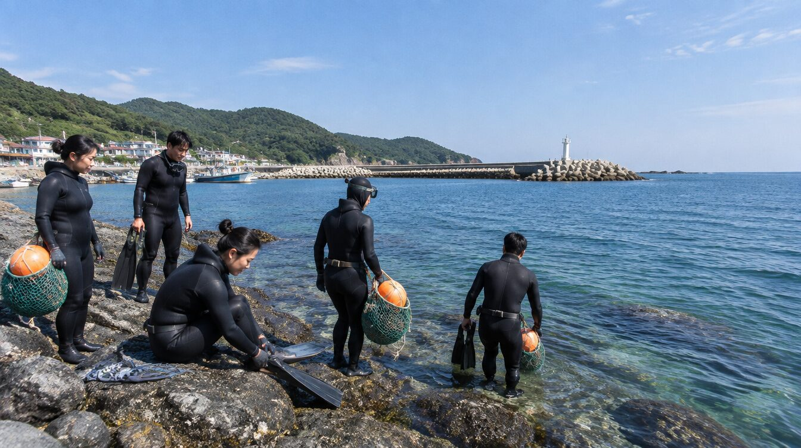
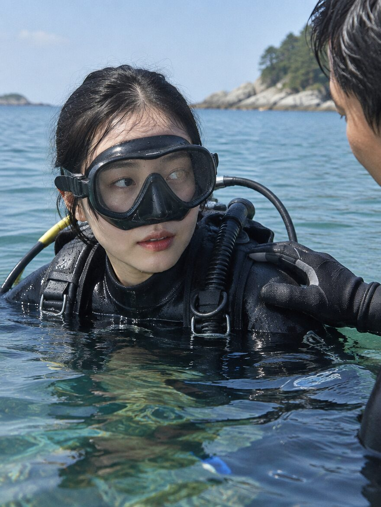
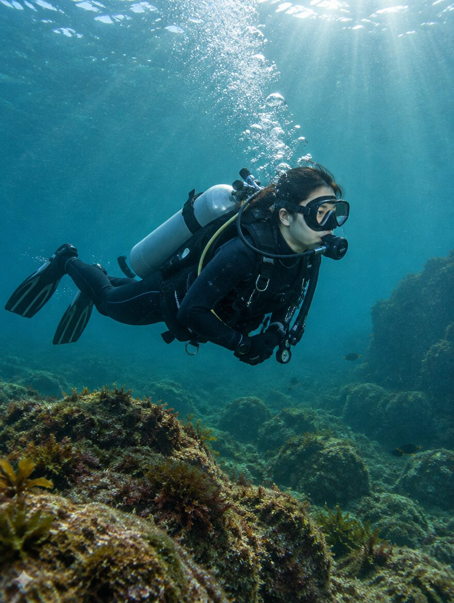
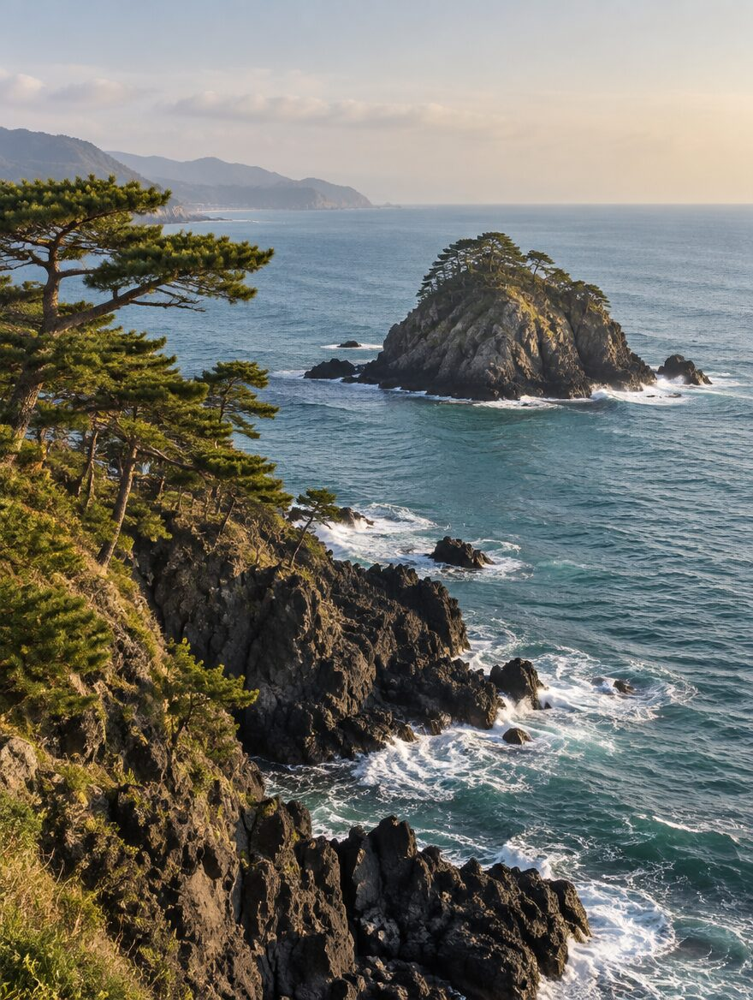
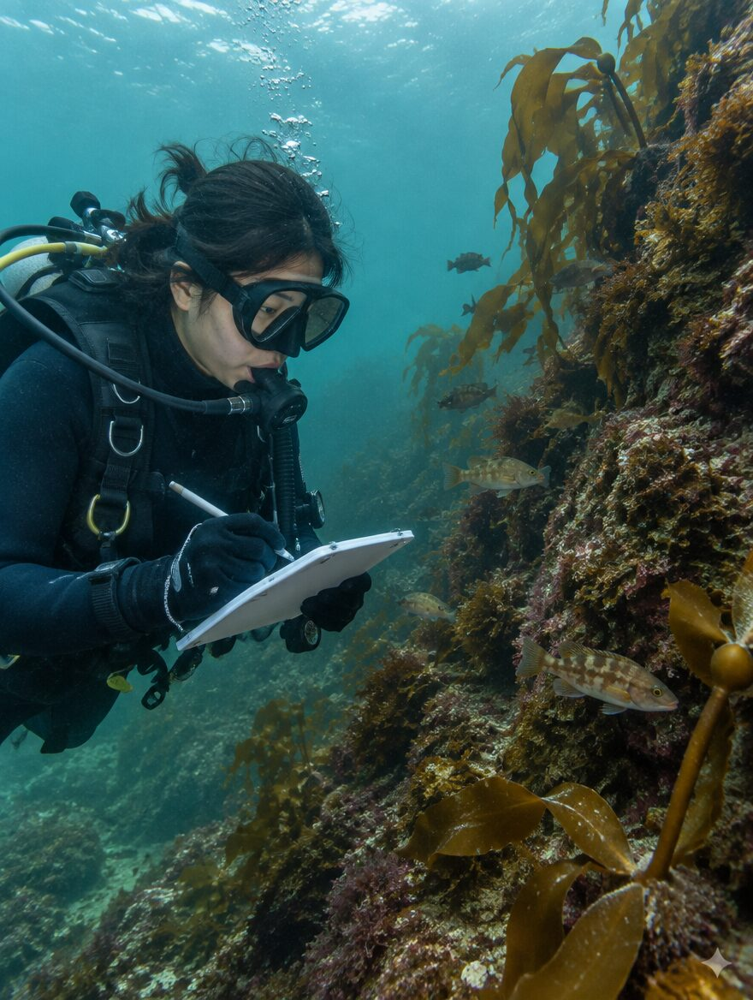
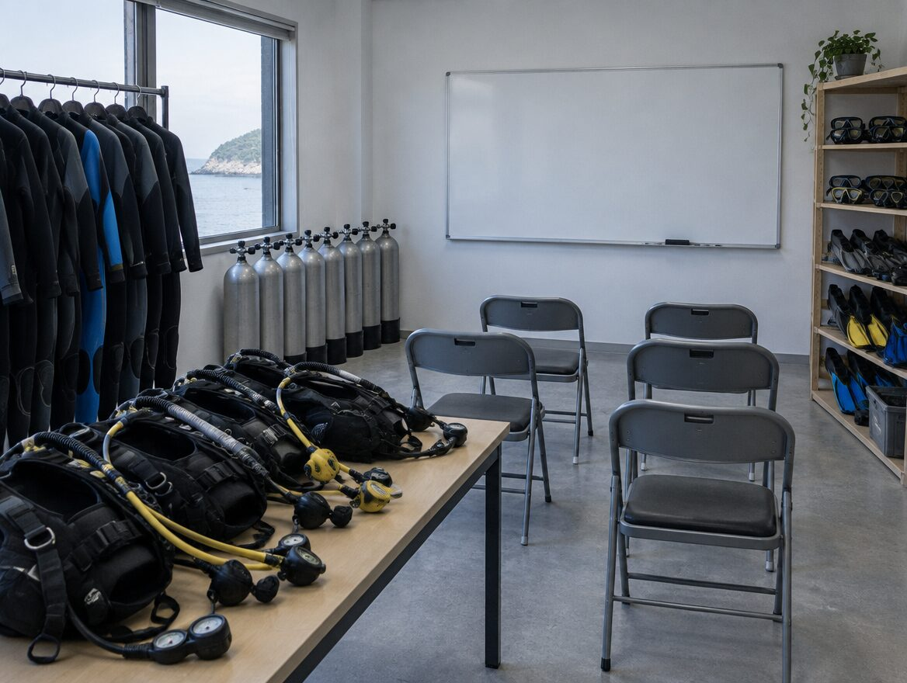
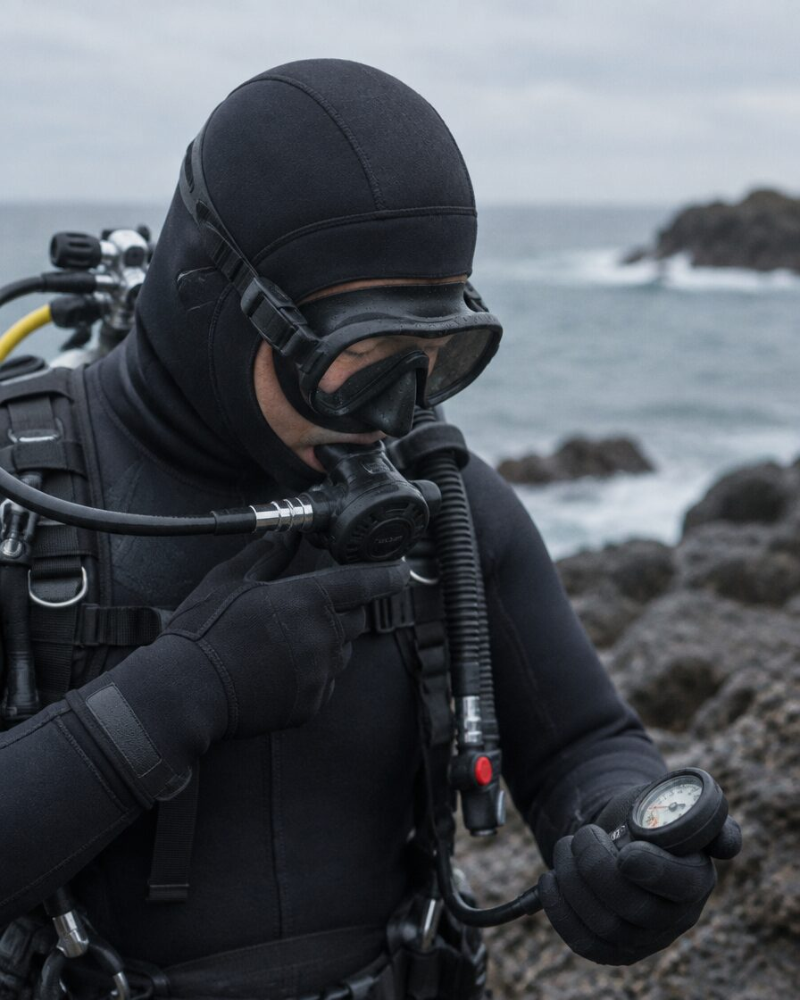
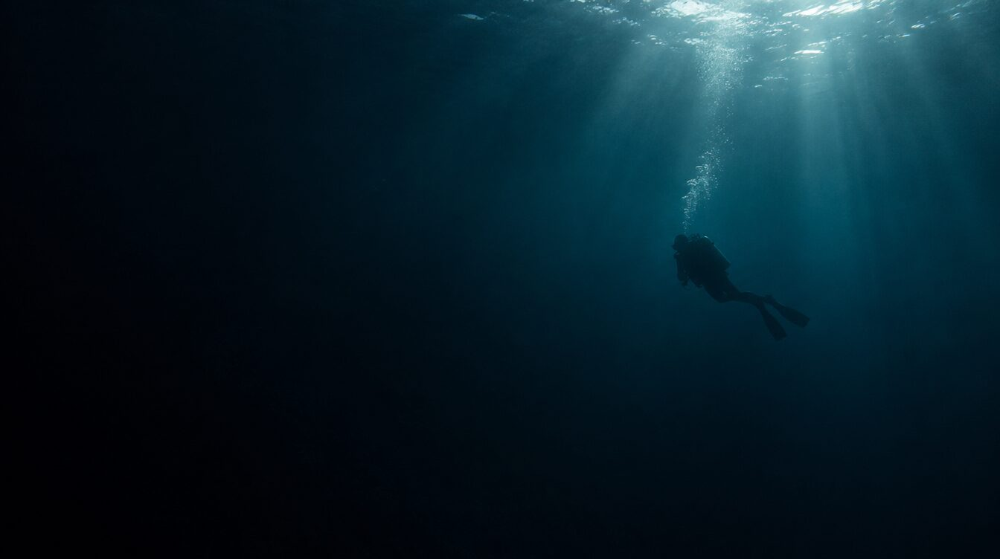

01
교육장과 바다, 두 곳에서
감포읍 하동 교육장에서 이론과 안전 교육을 받고, 감포 해역으로 나가 직접 입수합니다.

01
감포읍 하동 교육장에서 이론과 안전 교육을 받고, 감포 해역으로 나가 직접 입수합니다.
02
체험 다이빙으로 시작해 자격증 과정, 상급 과정까지 단계별로 이어집니다.
03
수상구조사 자격을 가진 대표 강사가 상담부터 입수까지 직접 인솔합니다.
처음 입수부터 자격증 취득까지, 경험에 맞춰 진행합니다.

체험 다이빙
자격증 없이 참여할 수 있습니다. 호흡법과 장비 사용법을 배운 뒤 강사와 함께 첫 입수를 합니다.

스쿠버 자격증 교육
이론 강의와 기술 훈련, 해양 실습을 거쳐 자격증을 취득합니다. 이어서 상급 과정도 진행합니다.

문화 해설 다이빙
문무대왕릉, 감은사지 같은 감포의 역사와 이 바다의 이야기를 함께 듣는 프로그램입니다.

시민과학 · 해양환경
해양 생물을 관찰해 기록하고 수중 정화 활동을 합니다. 단체·기관과 협력해 운영합니다.
일정과 참가 인원, 준비물은 상담 때 안내해 드립니다.

다이빙(Dive)과 사람이 모이는 자리(마루)
경주 감포를 거점으로 체험 다이빙과 스쿠버 자격증 교육을 합니다. 한 번 물에 들어가 보는 것으로 끝나지 않도록 이론과 실습을 나눠 진행하고, 다음 과정까지 이어갑니다.
문무대왕릉과 감은사지가 있는 바다입니다. 감포의 역사와 자연도 프로그램에 함께 담습니다.
문의하기내륙 교육장에서 배우고, 감포 해역에서 실습합니다.
다이빙 경험과 일정을 듣고 프로그램과 날짜를 정합니다.
감포읍 하동 교육장에서 이론과 장비 사용법, 안전 수칙을 배웁니다.
오류리항과 고라섬 해역으로 나가 강사와 함께 입수합니다.
그날 다이빙을 정리하고, 이어서 할 과정을 안내합니다.
서보국대표 강사


일정과 프로그램, 준비물이 궁금하시면
편하게 연락 주세요.
교육은 감포읍 교육장에서, 실습은 감포 해역에서 합니다.
교육 거점
이론 강의와 안전 교육, 장비 준비를 하는 곳입니다.
네이버 지도에서 보기해양 실습장
실습 입수를 하는 해역입니다. 당일 기상과 해상 상황에 따라 장소가 바뀔 수 있습니다.
네이버 지도에서 보기